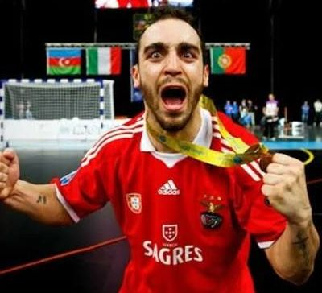
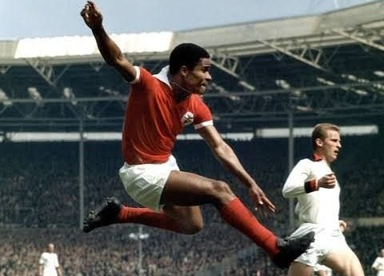
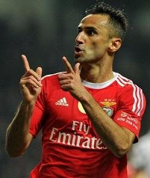

Bem-vindos ao Benficapédia, um site de apoio e informativo sobre o Universo do SL Benfica
O futsal é uma modalidade mais recente no clube, tal como no mundo em geral, com grande desenvolvimento a partir dos anos 2000, período em que o Benfica investiu fortemente nas modalidades de pavilhão. Feitos relevantes:

O voleibol surgiu também nas primeiras décadas do século XX, integrando o conjunto de modalidades criadas na fase de expansão do clube . O Benfica tornou-se referência nacional, com destaque para:
O basquetebol foi uma das primeiras modalidades criadas durante a expansão eclética do clube nas décadas de 1910 e 1920 . O Benfica tornou-se uma das maiores potências nacionais, com períodos de grande domínio, especialmente:
O hóquei em patins foi criado também no período de expansão das modalidades, entre as décadas de 1910 e 1920. O Benfica tornou-se um dos clubes mais titulados de Portugal e da Europa. Destaques históricos:
| Pos. | Jogador | Nacionalidade | Golos |
|---|---|---|---|
| 1º | Eusébio | Portugal(PT) | 473 |
| 2º | José Águas | Portugal(PT) | 379 |
| 3º | Nené | Portugal(PT) | 365 |
| 4º | José Torres | Portugal(PT) | 226 |
| 5º | Arsénio Duarte | Portugal(PT) | 220 |
| 6º | Rogério Pipi | Portugal(PT) | 204 |
| 7º | Julinho | Portugal(PT) | 198 |
| 8º | José Augusto | Portugal(PT) | 175 |
| 9º | Óscar Cardozo | Paraguai(PY) | 172 |
| 10º | Nuno Gomes | Portugal(PT) | 166 |
Máximo goleador da história do Benfica, com 476 golos. O "Rei" jogou 15 épocas com o Manto Sagrado vencendo a Taça dos Campeões da Europeus em 1962, por 5-3 ao Real Madrid de Puskas, com bis de Eusébio, em Berna.Chegou ainda a outras 3 finais, todas perdidas. Tinha um estilo de jogo explosivo, direto e extremamente completo, combinando uma velocidade impressionante com uma potência de remate devastadora. Venceu ainda 2 Botas de Ouro, 1 Bola de Ouro, 11 Campeonatos Nacionais e 5 Taças de Portugal e foi o melhor marcador do Mundia de 66, com 9 golos e levou Portugal à melhor prestação de sempre num Mundial. Tem uma estátua na porta 18(porta principal) do Estádio da Luz e é considerado um dos melhores da história do futebol português.

Enquanto Eusébio se encarregava dos golos Mário Coluna foi o líder incontestável, no pós José Águas, e o "motor" do meio-campo do Benfica nos anos 60, combinando uma força física impressionante, visão tática e passes precisos com um remate de longa distância devastador. De águia ao peito, conquistou ainda 10 campeonatos, 6 Taças de Portugal, jogou 525 jogos e marcou 127, durante os 16 anos no clube.
Conhecido como "Senhor Benfica", Toni ingressou como médio-centro no Benfica em 68/69 e completou 14 épocas de águia ao peito, com 393 jogos realizados. Notabilizou-se no Sport Lisboa e Benfica por um estilo baseado na entrega total, inteligência tática, rigor defensivo e forte liderança de balneário. Após pendurar as chuteiras, tornou-se treinador dedicando 15 épocas entre treinador principal e adjunto ao serviço do Glorioso, chegando às finais de 88 e 90. Ao todo conquistou 10 Campeonatos e 6 Taças de Portugal
Juntamente com José Augusto, deixavam os adversários feridos nas alas quando enfrentavam aquele Benfica da década de 60, que se sagrou bicampeão europeu. Destacava-se pelo drible eletrizantel e por ser um extremo-esquerdo de baixa estatura (conhecido pela alcunha de "Rato Mickey"), mas dotado de enorme agilidade, velocidade e uma inteligência tática muito acima da média.Com o manto sagrado foram 14 épocas, 448 jogos, 71 golos, 1 Taça dos Clubes Campeões Europeus, 10 Campeonatos e 4 Taças de Portugal
Tamagnini Manuel Gomes Batista, mais conhecido por Nené, jogou pelo Benfica a vida toda, entre 68/69 e 85/86. Destacou-se numa era em que o futebol era extremamente físico e os avançados disputavam a bola de forma agressiva, Nené destacava-se pela elegância, inteligência e eficácia máxima com o mínimo de esforço visível. Jogou 577 jogos, sendo o jogador com mais mais jogos da história do clube e 3º melhor marcador da história do clube, com 367 golos apontados com o Manto Sagrado. Conquistou 10 Campeonatos e 7 Taças de Portugal
José Águas era um avançado-centro elegante, fino e de grande porte físico, célebre sobretudo pela sua extraordinária inteligência no posicionamento e pelo jogo aéreo formidável — considerado por muitos o melhor intérprete de cabeça que o Sport Lisboa e Benfica e Portugal já tiveram. O "Grande Capitão" foi o melhor marcador da 1ªedição da TCCE vencida pelo Benfica e 5 vezes da 1ª liga portuguesa. Ao serviço do Benfica, foram 13 épocas, 379 jogos e 378 golos, números excecionais, e ainda 2 TCCE, capitão em ambas, 6 Campeonatos e 7 Taças de Portugal.Sendo o 2ºmelhor marcador da história do Benfica.
Conhecido, também, por Chalanix(pelas parçenças com Asterix) caracterizava-se por uma imprevisibilidade total e uma técnica virtuosa, sendo amplamente considerado um dos extremos mais criativos do futebol europeu dos anos 70 e 80.Com a camisola 10 encarnada, jogou 13 épocas, 410 jogos, marccou 64 conquistando 6 Campeonatos, 3 Taças de Portugal e chegou à final da Taça UEFA de 84 e às finais da Champions League de 88 e 90. É o 2º jogador mais novo de sempre a estrear-se com o Manto Sagrado
Chegado ao Benfica em Setembro de 2014, a custo zero vindo do Valência, chegou como um desconhecido e saiu como uma lenda. Jonas foi peça chave nas conquistas do bi, do tri e do inédito tetracampeonato. Jonas , conhecido popularmente no futebol como "O Pistolas", foi um avançado que se destacou pela sua classe, inteligência tática superior e finalização letal. Longe de ser um ponta de lança posicional ou um "camisa 9" fixo e puramente físico, Jonas definia-se a si mesmo como um segundo avançado, destacando-se pela capacidade de ligar o meio-campo ao ataque antes de surgir na área para finalizar. Em 5 épocas, foi 4 vezes campeão nacional, 1 vez da Taça de Portugal, fez 183 jogos, marcou 137 golos e distribui 36 assistências, foi ainda 2 vezes melhor marcador do campeonato

Formado no Bessa, JVP mudou-se jovem para o Atlético de Madrid, experiência que não correu bem decindo voltar ao Bessa, onde o Bnefica o foi buscar. Rapidamente se afirmou como uma das estrela da companhia, sendo juntamente com Preud'homme, o pouco que se salvou do tempo do Vietname, após as grandes equipas de 92/93 e de93/94, formada por nomes como Paulo Futre, Rui Costa, Mozer, Veloso, Paneira e Isaías, que viria a ser desmontada devido à péssima gestão da direção liderada por Manuel Damásio. Recordado por muitos pelo mítico 6-3 em Alvalade no Derbi Eterno. Em 2000, após 302 jogos, 88 golos e 66 assistências, o capitão e ídolo de uma geração é dispensado por João Vale e Azevedo, que na época gerou grande revolta por partes dos associados. Ao serviço do Benfica foram 2 Taças e 1 Campeonato.
Manuel Galrinho Bento(Guarda-Redes)
António Veloso(Defesa Direito)
Minervino Pietra(Defesa Direito)
Humberto Coelho(Defesa Central)
Luisão(Defesa Central)
Álvaro Magalhães(Defesa Esquerdo)
Grimaldo(Defesa Esquerdo)
Shéu Han(Médio)
Pablo Aimar(Médio Centro Ofensivo)
Diamantino Miranda(Médio Centro Ofensivo)
João Alves"O Luvas Pretas"(Médio Centro Ofensivo)
Rui Manuel César Costa(Médio Centro Ofensivo)
Luís Miguel"Pizzi"(Médio/Extremo)
José Augusto(Extremo Direito)
Angél Di Maria(Extremo direito)
Óscar "Tacuara" Cardozo(Ponta de lança)
Nico Gáitan(Extremo Esquerdo)
Simão Saborosa(Extremo Esquerdo)
Eduardo "Toto" Salvio(Extremo Direito)
Rafa Silva(Extremo Direito)
Vítor Paneira(Extremo Direito)